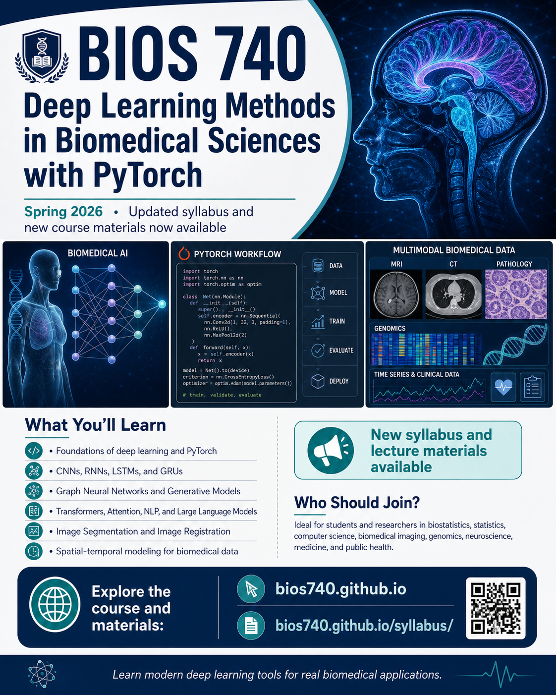

Deep Learning Methods in Biomedical Sciences with PyTorch
A modern AI curriculum taught with the rigor of statistics — built around real biomedical data and the problems that actually matter: imaging, genomics, electronic health records, and beyond.

From foundations to the frontier.
Multimodal biomedical data, at real-world scale.
Most courses teach tools. This one teaches judgment.
Application-driven. Real scientific problems and real datasets — not curated benchmarks built for demonstrations.
Statistics meets ML. Few courses sit at the intersection of statistics, machine learning, and biomedical data science. This one lives there.
Built for the AI era. Skills that translate directly to research labs and production teams — not just to the next assignment.
Project-shaped. You leave with work you can show — to advisors, to reviewers, to hiring committees.
Built for graduate students and researchers.
Ideal for students and researchers in biostatistics, statistics, computer science, biomedical imaging, genomics, neuroscience, medicine, and public health.
The team behind the course.

Department of Biostatistics, UNC Chapel Hill